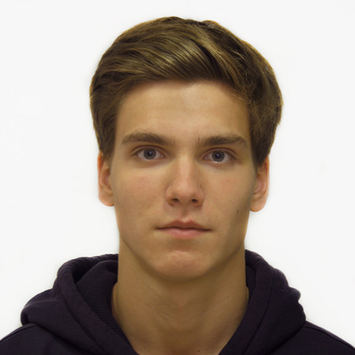

Резюме Junior front-end developer
Вертоградов Тимофей


|
Резюме Junior front-end developer |
Вертоградов Тимофей |
|
|
 |
Образование |
Опыт работы |
Тип работы |
Вид занятости |
Цель: Получение должности Junior front-end developer, верстальщик HTML/CSS в компании с дружным коллективом, с возможностью роста и развития. Возможность изучать новые технологии и улучшить свои существующие навыки.
11.2015 – 11.2016
ЧП ЭлектроХаус
Контент-менеджер.
Киевский национальный торгово-экономический университет
Программная инженерия
Бакалавр.
09.20015 – 06.2019
PHP-Academy
FullStack Developer
Знание языков:
Украинский (родной), русский (родной), английский (продвинутый).